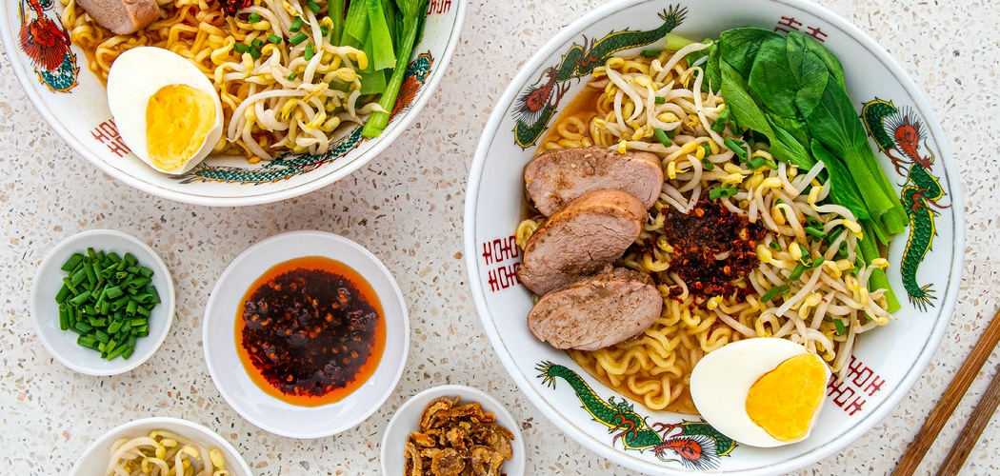

Ramen

For those late night munchies...
Hungry late at night but don't want to cook up a complicated meal? This simple Shin Ramen recipe
upgraded with just a few melt-in-your-mouth slices of char siu pork, crisp Chinese greens, blanched
bean sprouts, a boiled egg, deep-fried shallots, and chilli oil will leave you with minimal cleanup and
greatly satisfied!
- 1 packet of Shin Ramen
- 1 boiled egg
- 1 bunch bok choy (optional)
- 3 tbsp bean sprouts
- 3 slices char siu pork
- 1 tbsp chilli paste
- 1 tbsp chilli oil
- 1 tsp fried shallots
- Bring a pot of 550 ml of water to the boil.
- Using a small colander, blanch the bok choy for 30 seconds. If not using bok choy, go ahead and skip this step.
- Using a small colander, blanch the bean sprouts for 30 seconds.
- Add the Nongshim soup powder, to taste (it’s quite hot).
- Add the disc of noodles and cook for 4 minutes on a gentle boil.
- Tip the stock and noodles carefully into a soup bowl.
- Add the bok choy and bean sprouts.
- Add the egg and the pork slices.
- Add a good dob of chilli paste to the bowl and pour over some chilli oil.
- Sprinkle with spring onions and fried shallots.